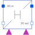
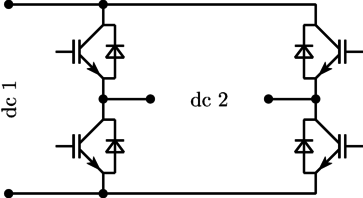

HBridgeH bridge (four quadrant converter) |

|
Diagram
{kind=link}
Information
This information is part of the Modelica Standard Library maintained by the Modelica Association.
The H bridge is a four quadrant DC/DC converter. It consists of two single phase DC/AC converters which are controlled differently; see Fig. 1.
|  |
If the firing inputs fire_p and fire_n are inverse, the two legs are controlled symmetrically so that full positive or negative output voltage can be generated. See examples
DCDC.HBridge.
Parameters (10)
| useHeatPort |
Value: false Type: Boolean Description: =true, if heatPort is enabled |
|---|---|
| T |
Value: 293.15 Type: Temperature (K) Description: Fixed device temperature if useHeatPort = false |
| useConstantEnable |
Value: true Type: Boolean Description: true = disabled boolean input, use constantEnable |
| constantEnable |
Value: true Type: Boolean Description: Constant enabling of firing signals |
| RonTransistor |
Value: 1e-05 Type: Resistance (Ω) Description: Transistor closed resistance |
| GoffTransistor |
Value: 1e-05 Type: Conductance (S) Description: Transistor opened conductance |
| VkneeTransistor |
Value: 0 Type: Voltage (V) Description: Transistor threshold voltage |
| RonDiode |
Value: 1e-05 Type: Resistance (Ω) Description: Diode closed resistance |
| GoffDiode |
Value: 1e-05 Type: Conductance (S) Description: Diode opened conductance |
| VkneeDiode |
Value: 0 Type: Voltage (V) Description: Diode threshold voltage |
Connectors (8)
| dc_p1 |
Type: PositivePin Description: Positive DC input |
|
|---|---|---|
| dc_n1 |
Type: NegativePin Description: Negative DC input |
|
| dc_p2 |
Type: PositivePin Description: Positive DC output |
|
| dc_n2 |
Type: NegativePin Description: Negative DC output |
|
| heatPort |
Type: HeatPort_a Description: Conditional heat port |
|
| enable |
Type: BooleanInput Description: Enables fire and notFire |
|
| fire_p |
Type: BooleanInput Description: Firing signals of positive potential leg |
|
| fire_n |
Type: BooleanInput Description: Firing signals of negative potential leg |
Components (5)
| enableLogic |
Type: EnableLogic Description: Enabling logic |
|
|---|---|---|
| andCondition_p |
Type: And Description: And condition for positive firing signal |
|
| andCondition_n |
Type: And Description: And condition for negative firing signal |
|
| inverter_p |
Type: SinglePhase2Level |
|
| inverter_n |
Type: SinglePhase2Level |
Used in Components (2)
|
Modelica.Electrical.Machines.Examples.ControlledDCDrives.Utilities Switching DC-DC inverter |
|
|
Modelica.Electrical.PowerConverters.Examples.DCDC.ExampleTemplates H bridge DC/DC converter |